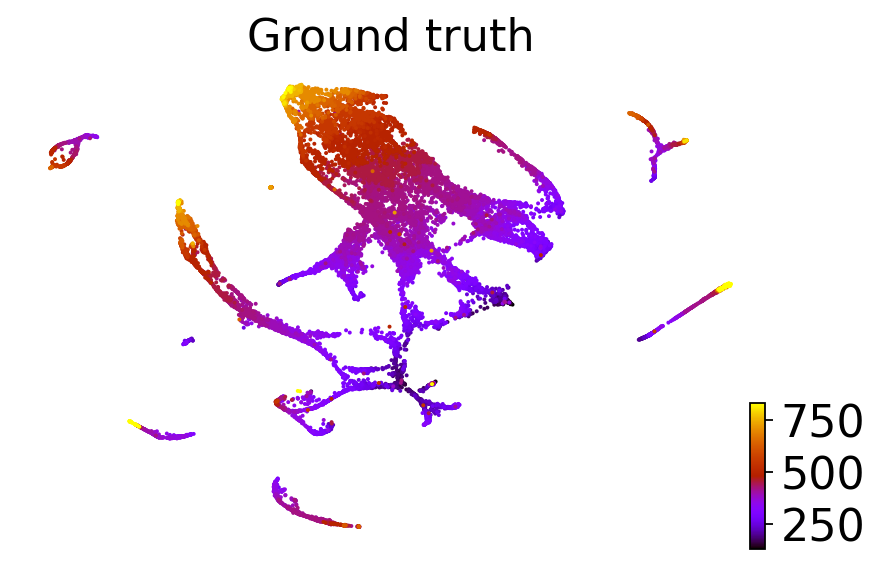
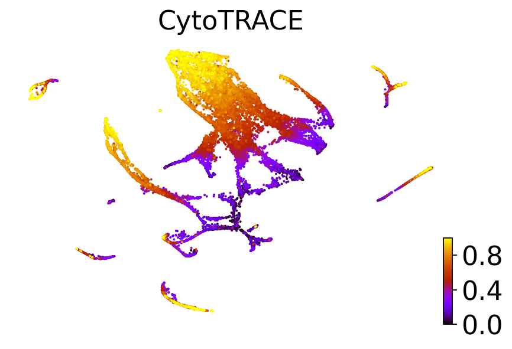
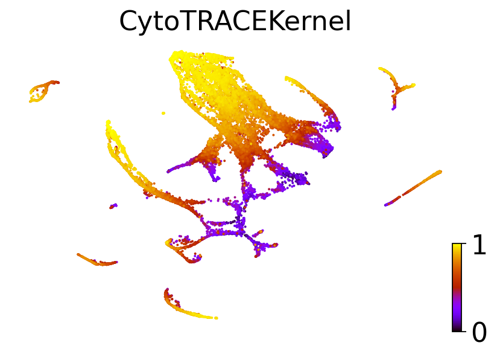

CytoTRACE vs. CytoTRACEKernel benchmark#
Library imports#
import os
import sys
from typing import Dict
import numpy as np
import pandas as pd
from scipy.sparse import csr_matrix
from scipy.stats import spearmanr
import matplotlib.pyplot as plt
import mplscience
import seaborn as sns
import cellrank as cr
import scanpy as sc
import scvelo as scv
from anndata import AnnData
sys.path.extend(["../../../", "."])
from paths import DATA_DIR, FIG_DIR # isort: skip # noqa: E402
Global seed set to 0
General settings#
sc.settings.verbosity = 2
cr.settings.verbosity = 4
scv.settings.verbosity = 3
scv.settings.set_figure_params("scvelo", dpi_save=400, dpi=80, transparent=True, fontsize=20, color_map="viridis")
SAVE_FIGURES = False
if SAVE_FIGURES:
os.makedirs(FIG_DIR / "cytotrace_kernel" / "benchmark", exist_ok=True)
Function definition#
def get_score_agreement(
adata: AnnData,
ground_truth_maturity: Dict,
cyto_trace_key: str = "ct_pseudotime",
groupby: str = "clusters",
):
"""Quantify agreement between cyto_trace maturity score and ground-truth.
Parameters
----------
ground_truth_maturity
Dict of `cluster: maturity`
cyto_trace_key
Key from `adata.obs` where cyto_trace score assesing maturity can be found.
Higher values shoudl correspond to more mature cell types (i.e. like a pseudotime)
groupby
Denotes where to find the categorical group annotation that should be used to average the
cyto-trace score
use_kendalltau
If true, use `scipy.stats.kendalltau`, else use `scipy.states.spearmanr`
Returns
-------
Results of the association test
"""
# Get the average cyto-trace score
clusters = adata.obs[groupby].cat.categories
cyto_trace_maturity = {
cluster: np.mean(adata[adata.obs[groupby] == cluster].obs[cyto_trace_key]) for cluster in clusters
}
# Put both as columns in a DataFrame
maturity_df = pd.DataFrame.from_dict(ground_truth_maturity, orient="index", columns=["gt"])
maturity_df["cyto_trace"] = maturity_df.index.map(cyto_trace_maturity)
# Compute association
return spearmanr(maturity_df["gt"], maturity_df["cyto_trace"])
def get_consistency(adatas: Dict[str, AnnData]):
"""Quantify consistency between original vs. re-implementation.
Parameters
----------
validation_data_work
data_work sets where the comparison is to be performed
Returns
-------
results: contains the comparison as a DataFrame
scores: the computed CytoTRACE scores
"""
# Create DataFrame for the results (the actual comparison scores)
results = pd.DataFrame(
index=adatas.keys(),
columns=["CytoTRACEKernel vs. GT", "CytoTRACE vs. GT", "Pearson corr. CytoTRACEKernel vs. CytoTRACE"],
)
# Create a dict for the computed CytoTRACE scores
scores = {}
# loop over data_worksets
for dataset, adata in adatas.items():
print(f"\nProcessing {dataset}\n")
# Make a copy of the object
data_work = adata.copy()
# Filter genes
sc.pp.filter_genes(data_work, min_cells=10)
data_work.raw = data_work.copy()
# Normalize and log transform
scv.pp.normalize_per_cell(data_work)
sc.pp.log1p(data_work)
# Annotate (but do not filter to) highly variable genes
sc.pp.highly_variable_genes(data_work)
# Compute PCA and neighbors
sc.tl.pca(data_work)
sc.pp.neighbors(data_work, n_pcs=30, n_neighbors=30)
# Prepare data imputation (scvelo's `moments` function operates on unspliced/spliced layers)
data_work.layers["spliced"] = data_work.X
data_work.layers["unspliced"] = data_work.X
scv.pp.moments(data_work, n_pcs=None, n_neighbors=None)
# Check that we have in fact computed imputed expression values for all (not just hv) genes
assert data_work.layers["Ms"].shape[1] == data_work.X.shape[1], "Imputed shape does not match raw shape"
# Instantiate a CytoTRACE kernel from cellrank and compute the CytoTRACE score
_ = cr.kernels.CytoTRACEKernel(data_work).compute_cytotrace()
# Create a dict that stores the ground truth per cluster
diff_state_gt = {
ground_truth_cat: ground_truth_cat_id
for ground_truth_cat_id, ground_truth_cat in enumerate(data_work.obs["Ground_truth"].cat.categories)
}
# Quantify agreement between reimplementation and ground truth
spearman_corr = {}
spearman_corr["CytoTRACEKernel vs. GT"] = get_score_agreement(
data_work, ground_truth_maturity=diff_state_gt, groupby="Ground_truth", cyto_trace_key="ct_pseudotime"
)
# Quantify agreement between original implementation and ground truth
spearman_corr["CytoTRACE vs. GT"] = get_score_agreement(
data_work,
ground_truth_maturity=diff_state_gt,
groupby="Ground_truth",
cyto_trace_key="original_ct_pseudotime",
)
# Quantify correlation among the two measures
pearson_corr = np.corrcoef(x=data_work.obs["ct_pseudotime"], y=data_work.obs["original_ct_pseudotime"])[0, 1]
# write to the results data_Frame
results.loc[dataset, "CytoTRACEKernel vs. GT"] = spearman_corr["CytoTRACEKernel vs. GT"].correlation
results.loc[dataset, "CytoTRACE vs. GT"] = spearman_corr["CytoTRACE vs. GT"].correlation
results.loc[dataset, "Pearson corr. CytoTRACEKernel vs. CytoTRACE"] = pearson_corr
scores[dataset] = data_work.obs["ct_pseudotime"]
return results, scores
C. elegans - Hypodermis and seam#
Data loading#
adatas = {}
adatas["Bone marrow 10x (Schaum et al., Nature 2018)"] = sc.read(
DATA_DIR / "tabula_muris" / "raw" / "Bone_marrow_10x_matrix.txt"
).T
adatas["Bone marrow SmartSeq2 (Schaum et al., Nature 2018)"] = sc.read(
DATA_DIR / "tabula_muris" / "raw" / "Bone_marrow_smartseq2_matrix.txt"
).T
adatas["C. elegans ciliated neurons (Packer et al., Science 2019)"] = sc.read(
DATA_DIR / "c_elegans" / "raw" / "Ciliated_neurons_celegans_matrix.txt"
).T
adatas["C. elegans hypodermis and seam (Packer et al., Science 2019)"] = sc.read(
DATA_DIR / "c_elegans" / "raw" / "Hypodermis_and_seam_celegans_matrix.txt"
).T
adatas["C. elegans muscle and mesoderm (Packer et al., Science 2019)"] = sc.read(
DATA_DIR / "c_elegans" / "raw" / "Muscle_and_mesoderm_celegans_matrix.txt"
).T
adatas["Zebrafish embryogenesis (Farrell et al., Science 2018)"] = sc.read(
DATA_DIR / "zebrafish" / "raw" / "GSE106474_UMICounts.txt"
).T
adatas
{'Bone marrow 10x (Schaum et al., Nature 2018)': AnnData object with n_obs × n_vars = 3427 × 13526,
'Bone marrow SmartSeq2 (Schaum et al., Nature 2018)': AnnData object with n_obs × n_vars = 4442 × 17479,
'C. elegans ciliated neurons (Packer et al., Science 2019)': AnnData object with n_obs × n_vars = 10775 × 20222,
'C. elegans hypodermis and seam (Packer et al., Science 2019)': AnnData object with n_obs × n_vars = 12254 × 20222,
'C. elegans muscle and mesoderm (Packer et al., Science 2019)': AnnData object with n_obs × n_vars = 22370 × 20222,
'Zebrafish embryogenesis (Farrell et al., Science 2018)': AnnData object with n_obs × n_vars = 39505 × 23974}
metadata = {}
metadata["Bone marrow 10x (Schaum et al., Nature 2018)"] = pd.read_csv(
DATA_DIR / "tabula_muris" / "raw" / "Bone_marrow_10x_metadata.txt", sep="\t", skiprows=None, index_col=None
)
metadata["Bone marrow SmartSeq2 (Schaum et al., Nature 2018)"] = pd.read_csv(
DATA_DIR / "tabula_muris" / "raw" / "Bone_marrow_smartseq2_metadata.txt", sep="\t", skiprows=None, index_col=None
)
metadata["C. elegans ciliated neurons (Packer et al., Science 2019)"] = pd.read_csv(
DATA_DIR / "c_elegans" / "raw" / "Ciliated_neurons_celegans_metadata.txt", sep="\t", skiprows=None, index_col=None
).join(
pd.read_csv(
DATA_DIR / "c_elegans" / "cedata-Ciliated neuronsdownmeta-2021-03-15.csv",
skiprows=None,
index_col=0,
),
how="inner",
)
metadata["C. elegans hypodermis and seam (Packer et al., Science 2019)"] = pd.read_csv(
DATA_DIR / "c_elegans" / "raw" / "Hypodermis_and_seam_celegans_metadata.txt",
sep="\t",
skiprows=None,
index_col=None,
)
metadata["C. elegans muscle and mesoderm (Packer et al., Science 2019)"] = pd.read_csv(
DATA_DIR / "c_elegans" / "raw" / "Muscle_and_mesoderm_celegans_metadata.txt",
sep="\t",
skiprows=None,
index_col=None,
)
metadata["Zebrafish embryogenesis (Farrell et al., Science 2018)"] = (
pd.read_csv(
DATA_DIR / "zebrafish" / "raw" / "metadata" / "URD_Dropseq_Meta.txt", sep="\t", skiprows=[1], index_col=0
)
.join(
pd.read_csv(
DATA_DIR / "zebrafish" / "raw" / "metadata" / "URD_Dropseq_Cluster_tSNEAll.txt",
sep="\t",
skiprows=[1],
index_col=0,
).rename(columns={old_column_name: f"{old_column_name}_tsne" for old_column_name in ["X", "Y", "Z"]}),
how="inner",
)
.join(
pd.read_csv(
DATA_DIR / "zebrafish" / "raw" / "metadata" / "URD_Dropseq_Cluster_URDDevelopmentalTree.txt",
sep="\t",
skiprows=[1],
index_col=0,
).rename(columns={old_column_name: f"{old_column_name}_force_directed" for old_column_name in ["X", "Y", "Z"]}),
how="left",
)
.join(
pd.read_csv(DATA_DIR / "zebrafish" / "raw" / "metadata" / "Zebrafish_metadata.txt", sep="\t").rename(
columns={"Phenotype": "ct_phenotype", "Component_1": "ct_component_1", "Component_2": "ct_component_2"}
),
how="inner",
)
.join(
pd.read_csv(DATA_DIR / "zebrafish" / "raw" / "metadata" / "2021-03-10_cluster_labels.csv", index_col=0).rename(
columns={"ZF6S-Tips-Named": "gt_terminal_states"}
),
how="left",
)
)
Data processing#
for dataset in adatas.keys():
adatas[dataset].X = csr_matrix(adatas[dataset].X).copy()
updated_obs = adatas[dataset].obs.join(metadata[dataset], how="inner")
adatas[dataset] = adatas[dataset][updated_obs.index].copy()
pd.testing.assert_index_equal(left=adatas[dataset].obs_names, right=updated_obs.index)
adatas[dataset].obs = updated_obs
adatas[dataset].obs["Ground_truth"] = adatas[dataset].obs["Ground_truth"].astype("category")
adatas[dataset].obs["original_ct_pseudotime"] = (
1 - adatas[dataset].obs["CytoTRACE"].values / adatas[dataset].obs["CytoTRACE"].values.max()
)
dataset = "C. elegans muscle and mesoderm (Packer et al., Science 2019)"
adatas[dataset].obs["Ground truth continuous"] = adatas[dataset].obs["Ground_truth"].astype(float).values.copy()
adatas[dataset].obsm["X_ct"] = np.concatenate(
(adatas[dataset].obs["Component_1"].values[:, None], adatas[dataset].obs["Component_2"].values[:, None]), axis=1
)
CytoTRACE score comparison#
df_results, scores = get_consistency(adatas)
Processing Bone marrow 10x (Schaum et al., Nature 2018)
filtered out 923 genes that are detected in less than 10 cells
Normalized count data: X.
extracting highly variable genes
finished (0:00:00)
computing PCA
on highly variable genes
with n_comps=50
finished (0:00:00)
computing neighbors
using 'X_pca' with n_pcs = 30
finished (0:00:06)
computing moments based on connectivities
finished (0:00:03) --> added
'Ms' and 'Mu', moments of un/spliced abundances (adata.layers)
Computing CytoTRACE score with `12603` genes
DEBUG: Correlating all genes with number of genes expressed per cell
Adding `adata.obs['ct_score']`
`adata.obs['ct_pseudotime']`
`adata.obs['ct_num_exp_genes']`
`adata.var['ct_gene_corr']`
`adata.var['ct_correlates']`
`adata.uns['ct_params']`
Finish (0:00:00)
Processing Bone marrow SmartSeq2 (Schaum et al., Nature 2018)
filtered out 1589 genes that are detected in less than 10 cells
Normalized count data: X.
extracting highly variable genes
finished (0:00:00)
computing PCA
on highly variable genes
with n_comps=50
finished (0:00:00)
computing neighbors
using 'X_pca' with n_pcs = 30
finished (0:00:00)
computing moments based on connectivities
finished (0:00:07) --> added
'Ms' and 'Mu', moments of un/spliced abundances (adata.layers)
Computing CytoTRACE score with `15890` genes
DEBUG: Correlating all genes with number of genes expressed per cell
Adding `adata.obs['ct_score']`
`adata.obs['ct_pseudotime']`
`adata.obs['ct_num_exp_genes']`
`adata.var['ct_gene_corr']`
`adata.var['ct_correlates']`
`adata.uns['ct_params']`
Finish (0:00:00)
Processing C. elegans ciliated neurons (Packer et al., Science 2019)
filtered out 7399 genes that are detected in less than 10 cells
Normalized count data: X.
extracting highly variable genes
finished (0:00:00)
computing PCA
on highly variable genes
with n_comps=50
finished (0:00:00)
computing neighbors
using 'X_pca' with n_pcs = 30
finished (0:02:29)
computing moments based on connectivities
finished (0:00:06) --> added
'Ms' and 'Mu', moments of un/spliced abundances (adata.layers)
Computing CytoTRACE score with `12823` genes
DEBUG: Correlating all genes with number of genes expressed per cell
Adding `adata.obs['ct_score']`
`adata.obs['ct_pseudotime']`
`adata.obs['ct_num_exp_genes']`
`adata.var['ct_gene_corr']`
`adata.var['ct_correlates']`
`adata.uns['ct_params']`
Finish (0:00:00)
Processing C. elegans hypodermis and seam (Packer et al., Science 2019)
filtered out 6967 genes that are detected in less than 10 cells
Normalized count data: X.
extracting highly variable genes
finished (0:00:00)
computing PCA
on highly variable genes
with n_comps=50
finished (0:00:00)
computing neighbors
using 'X_pca' with n_pcs = 30
finished (0:00:02)
computing moments based on connectivities
finished (0:00:09) --> added
'Ms' and 'Mu', moments of un/spliced abundances (adata.layers)
Computing CytoTRACE score with `13255` genes
DEBUG: Correlating all genes with number of genes expressed per cell
Adding `adata.obs['ct_score']`
`adata.obs['ct_pseudotime']`
`adata.obs['ct_num_exp_genes']`
`adata.var['ct_gene_corr']`
`adata.var['ct_correlates']`
`adata.uns['ct_params']`
Finish (0:00:00)
Processing C. elegans muscle and mesoderm (Packer et al., Science 2019)
filtered out 6805 genes that are detected in less than 10 cells
Normalized count data: X.
extracting highly variable genes
finished (0:00:00)
computing PCA
on highly variable genes
with n_comps=50
finished (0:00:01)
computing neighbors
using 'X_pca' with n_pcs = 30
finished (0:00:05)
computing moments based on connectivities
finished (0:00:15) --> added
'Ms' and 'Mu', moments of un/spliced abundances (adata.layers)
Computing CytoTRACE score with `13417` genes
DEBUG: Correlating all genes with number of genes expressed per cell
Adding `adata.obs['ct_score']`
`adata.obs['ct_pseudotime']`
`adata.obs['ct_num_exp_genes']`
`adata.var['ct_gene_corr']`
`adata.var['ct_correlates']`
`adata.uns['ct_params']`
Finish (0:00:00)
Processing Zebrafish embryogenesis (Farrell et al., Science 2018)
filtered out 5022 genes that are detected in less than 10 cells
Normalized count data: X.
extracting highly variable genes
finished (0:00:01)
computing PCA
on highly variable genes
with n_comps=50
finished (0:00:09)
computing neighbors
using 'X_pca' with n_pcs = 30
finished (0:00:08)
computing moments based on connectivities
finished (0:00:42) --> added
'Ms' and 'Mu', moments of un/spliced abundances (adata.layers)
Computing CytoTRACE score with `18952` genes
DEBUG: Correlating all genes with number of genes expressed per cell
Adding `adata.obs['ct_score']`
`adata.obs['ct_pseudotime']`
`adata.obs['ct_num_exp_genes']`
`adata.var['ct_gene_corr']`
`adata.var['ct_correlates']`
`adata.uns['ct_params']`
Finish (0:00:01)
df_results["label"] = [
f"{name}: r={corr:.2f}"
for name, corr in zip(df_results.index, df_results["Pearson corr. CytoTRACEKernel vs. CytoTRACE"])
]
df_results["label"] = pd.Series(df_results["label"], dtype="category")
plt.figure(figsize=(6, 6))
ax_min, ax_max = 0.7, 1.0
ticks = [0.7, 0.8, 0.9, 1]
# Set the colorblind-friendly color palette
color_palette = sns.color_palette("colorblind", n_colors=df_results.shape[0])
with mplscience.style_context():
sns.set_style(style="whitegrid")
fig, ax = plt.subplots(figsize=(6, 4))
sns.scatterplot(
data=df_results,
x="CytoTRACEKernel vs. GT",
y="CytoTRACE vs. GT",
hue="label",
s=400,
alpha=0.8,
palette="colorblind",
ax=ax,
)
ax.plot([ax_min, ax_max], [ax_min, ax_max], "k--", zorder=0, linewidth=3)
# Figure asthetics
ax.legend(bbox_to_anchor=(1.05, 1), loc="upper left")
ax.set_title("Spearmann rank correlation")
ax.set_xticks(ticks=ticks, labels=ticks)
ax.set_yticks(ticks=ticks, labels=ticks)
ax.axis("square")
plt.show()
if SAVE_FIGURES:
fig.savefig(
FIG_DIR / "cytotrace_kernel" / "benchmark" / "cytotrace_vs_cytotracekernel_comparison.pdf",
format="pdf",
transparent=True,
bbox_inches="tight",
)
<Figure size 480x480 with 0 Axes>
dataset = "C. elegans muscle and mesoderm (Packer et al., Science 2019)"
adatas[dataset].obs["CytroTRACEKernel_ct_pseudotime"] = scores[dataset]
for obs_column in ["Ground truth continuous", "original_ct_pseudotime", "CytroTRACEKernel_ct_pseudotime"]:
fig, ax = plt.subplots(figsize=(6, 4))
if obs_column == "Ground truth continuous":
title = "Ground truth"
elif obs_column == "original_ct_pseudotime":
title = "CytoTRACE"
else:
title = "CytoTRACEKernel"
scv.pl.scatter(adatas[dataset], basis="ct", color=obs_column, color_map="gnuplot", title=title, ax=ax)
if SAVE_FIGURES:
fig, ax = plt.subplot(figsize=(6, 4))
scv.pl.scatter(
adatas[dataset], basis="ct", color=obs_column, color_map="gnuplot", colorbar=False, title="", ax=ax
)
if obs_column == "Ground truth continuous":
suffix = "ground_truth"
elif obs_column == "original_ct_pseudotime":
suffix = "cytotrace"
else:
suffix = "cytotracekernel"
fig.savefig(
FIG_DIR / "cytotrace_kernel" / "benchmark" / f"c_elegans_muscle_mesoderm_{suffix}.pdf",
format="pdf",
transparent=True,
bbox_inches="tight",
)


